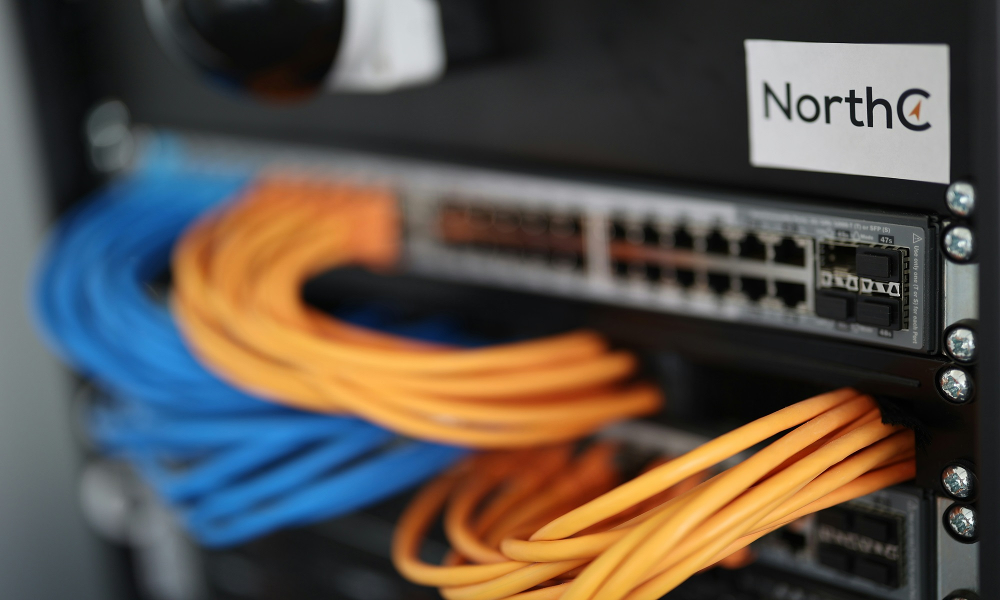

![Capture d'écran de la page d'accueil du service de recherche d'ontologies EMBL-EBI (OLS). L'interface propose une barre de recherche permettant de trouver des termes d'ontologie biomédicale, avec des options pour filtrer par correspondance exacte, inclure les termes obsolètes et les termes importés. En dessous, trois sections sont présentes : 'À propos d'OLS,' qui décrit sa fonction de référentiel d'ontologies biomédicales ; 'Outils connexes,' qui mentionne des services supplémentaires de cartographie d'ontologies comme OxO et ZOOMA ; et 'Signaler un problème,' qui oriente les utilisateurs vers un suivi GitHub pour les retours et les demandes d’ontologies.](images/OLS.png)
![Diagramme illustrant le flux de travail de la gestion des métadonnées dans OMERO, depuis l'acquisition d'images sur un microscope jusqu'à l'importation et l'annotation des métadonnées. Le processus implique l’importation de fichiers d’images fournisseurs via l’importateur OMERO, où les métadonnées sont extraites à l’aide de Bio-Formats. Les métadonnées sont structurées selon les spécifications de l’installation et les standards ontologiques. Le système OMERO.mde organise les métadonnées en paires clé-valeur structurées, permettant leur visualisation, annotation et exportation aux formats .txt, .tsv et .csv pour une réutilisation au format IDR.](images/Omero_Metadata.jpg)
![Liste de contrôle pour la publication d’images, couvrant les aspects du format d’image et des couleurs/canaux. La liste comprend des exigences telles que l'accent mis sur le contenu pertinent (recadrage, rotation, redimensionnement), la séparation des images individuelles et l’inclusion d’exemples pour la quantification. Elle insiste sur la visibilité des annotations, l’ajustement de la luminosité/du contraste, l’uniformité des comparaisons d’images et l’accessibilité des couleurs pour les personnes daltoniennes. Les étapes recommandées incluent l'ajout de versions en niveaux de gris, d'échelles d'intensité et d'ajustements comme la correction gamma et la pseudocoloration.](images/CheckList_ImagesA.png)
![Liste de contrôle pour l’annotation et la disponibilité des images. Cette section souligne l'importance d’inclure des informations d’échelle (comme les barres d’échelle et la longueur des images dans les légendes des figures), d’expliquer toutes les annotations, d’assurer leur lisibilité (épaisseur de ligne, taille, couleur), et de veiller à ce qu’elles ne masquent pas les données essentielles. Il est également recommandé d’ajouter des détails d’imagerie pertinents tels que la taille des pixels, les intervalles de temps et le temps d’exposition. La section sur la disponibilité des images suggère de partager les images avec une compression sans perte, de rendre les fichiers d’image librement téléchargeables dans des bases de données publiques et de les stocker dans des archives d’images dédiées.](images/CheckList_ImagesB.png)
![Capture d'écran du site Web de BioImage Archive, un dépôt en ligne gratuit pour les images biologiques. La page décrit le rôle de l'archive dans le stockage et la distribution des données d'imagerie de différentes modalités, à condition qu'elles soient associées à une publication évaluée par des pairs ou qu'elles aient une valeur significative. Elle met en avant les politiques de soumission, l'intégration avec d'autres bases de données bio-imagerie comme EMPIAR et IDR, ainsi que l'adhésion aux directives FAIR et REMBI. Le panneau de droite présente des ressources supplémentaires, notamment un tutoriel rapide et une bannière promotionnelle.](images/Bioimage.png)
![Capture d'écran de la page d'accueil du site Web OMERO. La page présente un arrière-plan sombre avec des images de fluorescence de cellules en microscopie. Le logo OMERO est centré, suivi d'une description expliquant qu'OMERO est un dépôt central sécurisé pour gérer, analyser et partager des images de microscopie. Il met en avant la compatibilité avec plus de 150 formats de fichiers image et un accès via des applications de bureau, le Web ou des logiciels tiers. Un bouton rouge intitulé 'Download Version 5.6' est mis en évidence.](images/Omero.png)
flowchart LR A[Détection des nucléus] --> B[Quantification] B --> C[Analyse spatiale]
Traitement d’images biomédicales et partage de flux de travail reproductibles
Guide à l’usage des chercheurs
![Un diagramme illustrant différents types de techniques d’imagerie biologique et leurs applications. La section supérieure, intitulée 'Sample Imaging' (imagerie d’échantillons), comprend des icônes représentant divers domaines de recherche tels que la biologie moléculaire, la génétique, la microbiologie et l’anatomie. En dessous, trois modalités d’imagerie sont représentées : 'Electron microscopy' (microscopie électronique en bleu clair), 'Light microscopy' (microscopie optique en bleu foncé) et 'Human bioimaging' (imagerie biomédicale en rouge foncé), indiquant leurs domaines d’application. En bas, 'Image data analysis' (analyse des données d’imagerie) est mentionné, soulignant l’aspect computationnel du traitement des images. Le diagramme met en évidence le rôle de l’imagerie dans plusieurs disciplines de recherche.](images/ImagingSamples.jpg)
Les images contiennent d’innombrables données
![Illustration humoristique en noir et blanc représentant une séance de thérapie. Un patient est allongé sur un divan et exprime ses préoccupations à un thérapeute qui prend des notes. Le patient a une bulle de pensée montrant une énorme vague étiquetée 'DATA' sur le point de s'écraser sur une petite silhouette impuissante. Le dessin illustre de manière humoristique la sensation d'être submergé par une grande quantité de données, un défi courant en recherche et en science des données. Le dessin est signé Henning Falk.](images/DataTheraphy.png)
La bio-imagerie est entrée dans le domaine des big data qui comprennent des ensembles de données de plus en plus complexes. Nous sommes confrontés à de nombreux défis, notamment le traitement des données et la gestion appropriés, ainsi que la création et le partage de flux de travail d’analyse d’images reproductibles.
Cyle de vie de BioImage
![Un diagramme circulaire illustrant le cycle de vie de la gestion des données de recherche en bioimagerie (RDM), intitulé 'Core Facility: Infrastructure and Bioimaging RDM Support.' Au centre, une icône représentant un chercheur symbolise l’utilisateur interagissant avec les différentes étapes du flux de travail. Le cycle de vie est divisé en segments : 'Acquisition d’image' (violet), 'Stockage et accès aux fichiers d’image' (jaune), 'Traitement et analyse des bioimages' (vert), 'Publication des données' (bleu), 'Archivage et stockage à long terme' (gris clair) et 'Planification, recherche et réutilisation des données' (gris). Autour du cercle extérieur, divers éléments d’infrastructure de soutien sont représentés, notamment le stockage cloud, le stockage en système de fichiers, le transfert efficace de données, les formats, les standards, les outils, les systèmes de permission, la sécurité des données, l’accès web, la connectivité et l’intégration des données. Le diagramme met en évidence une approche structurée de la gestion et du soutien des données de recherche en bioimagerie.](images/ImageLifeCycle.jpg)
Les bio-images ont un potentiel de découverte scientifique qui va au-delà de leur objectif d’acquisition initial lorsqu’elles sont traitées conformément aux principes FAIR (Schmidt, et al. 2024; voir Wilkinson, et al. 2016).
Aperçu général
Le stockage conventionnel basé sur un système de fichiers atteint rapidement ses limites. Avant que les données ne soient générées, les chercheurs doivent réfléchir à la manière dont elles seront stockées, déplacées, documentées et analysées pendant (et après) la durée de vie du projet.
![Capture d’écran de l’Explorateur de fichiers Windows dans la section 'Ce PC,' affichant les périphériques de stockage et l’espace disque disponible. L’image met en évidence deux zones clés : (1) l’option de navigation 'Ce PC' dans le panneau de gauche, et (2) la section 'Périphériques et lecteurs,' montrant plusieurs disques durs et partitions, dont certains presque pleins, représentés par des barres de stockage rouges. Cette image illustre les défis de gestion de l’espace disque et les avertissements de saturation sous Windows.](images/Overcapacity.png)
Directions actuelles :
- Exploiter les plans de gestion des données de recherche (PGD)
- Le stockage dans le nuage et les plateformes (par exemple OMERO) deviendront une OBLIGATION.
- Nécessité de formats standardisés (NGFFs).
Quels paramètres dois-je utiliser pour répondre à ma question de recherche ?
![Une image de microscopie à fluorescence d’une coupe coronale de cerveau de souris affichée dans une visionneuse d’images. L’image est issue d’un fichier `.czi` et présentée sous forme de TIFF 8 bits avec une taille de 23 Mo. Le signal de fluorescence apparaît en vert, mettant en évidence des structures spécifiques au sein du tissu cérébral. Les métadonnées affichées dans la visionneuse indiquent des dimensions de 9086.62 x 7290.43 microns, correspondant à une résolution de 2752 x 2208 pixels. Ce type d’imagerie est couramment utilisé en recherche en neurosciences pour visualiser l’expression des protéines, les structures cellulaires ou les régions anatomiques.](images/Image_8bit.png)

Considérez que…
![Une illustration humoristique sur le thème de la science, combinant du texte et un dessin de microscope. Sur le côté gauche, un texte en gras noir indique 'BRO, DO YOU EVEN SCOPE?' avec une illustration d’un microscope optique en dessous. Sur le côté droit, sur un fond bleu clair, le texte met en avant l'importance de la formation en microscopie : 'Un microscope est aussi bon que la personne qui l’utilise. La qualité des expériences peut être améliorée grâce à la formation.' Les mots 'microscope' et 'qualité des expériences' sont mis en évidence en bleu. L’image souligne avec humour l’importance d’une bonne formation pour obtenir des résultats de recherche de haute qualité en microscopie.](images/Microscope.jpeg)
Transformer les formats de fichiers
Après avoir acquis des images originales en formats propriétaires (c’est-à-dire .CZI ou .LIF), les chercheurs peuvent utiliser différents outils pour ouvrir et transformer les images en formats ouverts (.TIFF).


Format de fichier de nouvelle génération OME-Zarr
![Une illustration schématique d'une pyramide d’images, un concept utilisé en traitement d’image et en bioimagerie. La pyramide représente différents niveaux de résolution d’une même image, avec un échantillon de tissu cérébrale coloré en rose affiché à chaque niveau. La base de la pyramide correspond à la 'Résolution complète, Surface complète,' tandis que les niveaux intermédiaire et supérieur représentent '1/2 résolution, 1/4 de la surface' et '1/4 résolution, 1/16 de la surface,' respectivement. Cette visualisation met en évidence la manière dont les images sont stockées à plusieurs échelles pour optimiser le traitement et l’analyse en imagerie de lames entières et en microscopie multi-résolution.](images/ImagePyramid.jpeg)
- Stockage et affichage efficaces de l’image (découpage efficace à des angles arbitraires).
- Compatible avec Fiji, Napari, ITK/VTK Viewer, Neuroglancer, Vizarr, et 3D Cell Viewer de l’Allen Institute.
- Pour une conversion par lots vers OME-Zarr basée sur Conda, visitez ce dépôt.
- Traitez les ensembles de données OME-Zarr en Python en utilisant cet outil.
Recommended Metadata for Biological Images (REMBI)

REMBI donne des directives sur les métadonnées pour répondre aux besoins des diverses communautés de l’imagerie biomédicale.
Un modèle est disponible ici.
![Un tableau structuré présentant les différents modules de métadonnées nécessaires pour une documentation normalisée des données bio-imagerie. Le tableau comprend plusieurs sections : 'Étude,' 'Composant de l'étude,' 'Échantillon biologique,' 'Spécimen,' 'Acquisition d'image,' 'Données d'image,' 'Corrélation d'image,' et 'Données analysées.' Chaque ligne spécifie un attribut (ex. : type d'étude, méthode d'imagerie, entité biologique), une description de son importance, la méthode de saisie des données (texte, ontologie, extraction des données) et les ontologies associées (telles que EDAM-BIOIMAGING, FBbi, OME et EFO). Ce tableau met en évidence les éléments de métadonnées essentiels pour garantir la reproductibilité, l’interopérabilité et le partage structuré des données en recherche bio-imagerie.](images/Rembi.png)
Enregistrer les métadonnées des appareils d’imagerie
![Capture d'écran de l'application Micro Meta App, un outil de gestion des métadonnées de microscopie. La section supérieure affiche la bannière de l'application avec le titre 'MICRO META APP' et le slogan 'Microscopy Metadata for the Real World.' En dessous, deux sections principales permettent aux utilisateurs de 'Gérer l’instrument' et 'Gérer les paramètres,' offrant des options pour documenter les composants matériels et les paramètres d’acquisition. La moitié inférieure de l’image montre des vues détaillées de l’interface, incluant des composants de microscope étiquetés tels que les objectifs, les caméras, les filtres et les réglages laser, mettant en évidence des champs de métadonnées comme le fabricant, le gain, le grossissement et la profondeur de bits.](images/MicroMetaApp.png)
Visitez le site MicroMeta App et l’article de recherche associé
Methods J2 PlugIn
![Capture d’écran d’un document texte généré à l’aide de l’outil MethodsJ2 basé sur les entrées utilisateur et un fichier matériel de l’application Micro-Meta App. Le document décrit la configuration d’imagerie, y compris un microscope inversé Zeiss Axiovert 200M configuré pour la microscopie épifluorescence en champ large, contrôlé avec le logiciel Zen. Le texte précise les composants optiques, les paramètres d’imagerie tels que la taille des voxels (0,14 μm) et les détails de l’excitation par fluorescence utilisant une source lumineuse LED X-Cite 120 avec divers filtres d’excitation/émission et miroirs dichroïques. La section des remerciements crédite l’Advanced BioImaging Facility (ABIF) de McGill et Joel Ryan pour leur assistance.](images/MethodsJ2.png)
Le plugin MethodsJ2 Fiji génère du texte pour le matériel et les méthodes de microscopie en extrayant des informations des métadonnées (fichier MicroMeta App). Visitez ici le dépôt GitHub ou l’article de recherche associé.
OMERO : L’un des meilleurs choix
OMERO intègre MDEmic (MetaData Editor for microscopy), un outil qui permet d’explorer et d’éditer facilement les métadonnées des images.
Métadonnées à prendre en considération
Les images peuvent se trouver à plusieurs endroits



À terme, les images biomédicales (big data) peuvent représenter téraoctets ou pentaoctets, ce qui dépasse la plupart des solutions standard de partage de fichiers.
Tip
Le stockage efficace des images nécessite une infrastructure, l’optimisation des flux de traitement et des protocoles de partage normalisés.
Référentiels d’images spécialisés
Autres solutions
Ces instances sont installées dans un espace dédié du réseau (core facility) pour un stockage et un partage à long terme.
Traitement et analyse d’images
Dans tout processus de recherche, l’analyse des images doit être :
Objectif
Fiable
Reproductible

Hiérarchie des tâches d’analyse d’images
![Diagramme illustrant la hiérarchie du traitement d'images en recherche biologique. La première section (A) distingue les processus de bas niveau pilotés par le signal, tels que le filtrage, la segmentation, le suivi et l'enregistrement, qui génèrent des sorties non directement interprétables, et les processus de haut niveau pilotés par la biologie, comme l'analyse statistique, l'inférence, la visualisation et la catégorisation, qui produisent des sorties interprétables. La deuxième section (B) présente un flux de travail commençant par l'enregistrement des images, suivi de la segmentation, du suivi, du filtrage et de l'analyse, menant à la visualisation et à l'interprétation.](images/Hierarchy.jpg)
Niveau bas (connaissances techniques)
Transformer des images en d’autres images ou données :
- Prétraitement (par exemple, déconvolution, élimination du bruit)
- Détection et segmentation d’objets (par exemple, cellules, organites intracellulaires)
- Suivi des particules/objets
Niveau haut (connaissances disciplinaires)
Transformer les résultats des tâches de bas niveau en informations ayant une signification biologique :
- Visualisation des données
- Ajustement de modèles statistiques
- Inférence statistique et mesures de l’incertitude
Flux de travail pour l’analyse d’images
![Diagramme illustrant différents flux de travail pour l'analyse d'images en recherche biologique. Le panneau gauche montre des images de microscopie en entrée. Le panneau central présente trois types de flux de travail : (a) un flux établi utilisant des méthodes prédéfinies comme SynAct pour l'analyse de l'activité synaptique, (b) un nouveau flux composé de plusieurs étapes de traitement comme des scripts, macros, pipelines ou plugins, et (c) un flux basé sur l'apprentissage automatique utilisant des réseaux neuronaux pour la classification d'images. Le panneau droit affiche différents résultats, notamment des courbes d'intensité de fluorescence en fonction du temps, des images segmentées et des comptages de classification.](images/Graph_Workflows.webp)
Une grande ressource pour l’analyse d’images : BioImage
BioImage.IO est un référentiel de modèles d’IA piloté par la communauté qui donne accès à des modèles d’IA pré-entraînés avec une pléthore de partenaires logiciels ouverts/gratuits.


Flux d’analyse d’images
![Liste de contrôle pour la publication des flux de travail d'analyse d'images, divisée en trois catégories : flux de travail établis, nouveaux flux de travail et flux de travail d'apprentissage automatique. Chaque catégorie énumère des critères tels que la citation du flux de travail ou de la plateforme, l'inclusion de données d'exemple, la sélection manuelle de la région d'intérêt (ROI), la version exacte, la disponibilité publique, la justification et les limitations. La liste de contrôle comprend des recommandations pour des normes de documentation minimales, recommandées et idéales.](images/CheckList_WorkflowsB.png)
Exemples d’images de résultats
![Directives pour la présentation des images de recherche, illustrant les meilleures pratiques pour garantir clarté et précision. Les sections comprennent : (a) mise en évidence du contenu pertinent par recadrage et redimensionnement, (b) séparation claire des images individuelles, (c) indication de l'origine des encadrés, (d) ajustement approprié de la luminosité et du contraste, (e) annotation des canaux de manière visible sur le fond, (f) utilisation des canaux en niveaux de gris pour améliorer la visibilité des caractéristiques, et (g) explication des valeurs des canaux à l'aide d'échelles de calibration et d'indicateurs.](images/CheckList_Formatting.webp)
Ressources et soutien
Matériel d’appui

Services de soutien :
Contactez-nous pour vous assurer que vos données sont bien préparées et qu’elles peuvent être partagées efficacement avec la communauté des chercheurs.
- Courriel : rdm-gdr@alliancecan.ca
- https://www.frdr-dfdr.ca/repo/